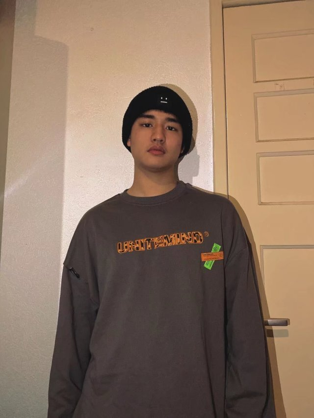
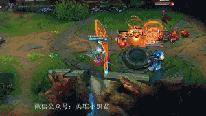

Hoi,
mijn naam is Haonan Wu. Ik kom uit China en ik ben 20 jaar en ik ben bijna drie jaar in nederland.Ik ben een relatief makkelijk persoon, ik hou van dingen die iedereen leuk vindt, en ik haat dingen die mensen niet leuk vinden. Maar soms zal ik specialer zijn.Bij het maken van wiskundige problemen heeft de leraar bijvoorbeeld duidelijk ideeën en antwoorden op het probleem gegeven, maar ik vraag me af of er andere manieren zijn om dit probleem op te lossen. Het is niet omdat ik goed ben in wiskunde, maar omdat mijn nieuwsgierigheid en brein me drijven.

Ik heb heel veel hobby's , zoals lijk basketbal, fitness, gamen,fietsen en rennen enz.... Het leukste vind ik om spelletjes te spelen en te sporten. Voor games schiet ik het liefst competitieve games en dota-games, zoals csgo en League of Legends. Voor fitness geef ik de voorkeur aan rennen en push-ups.
